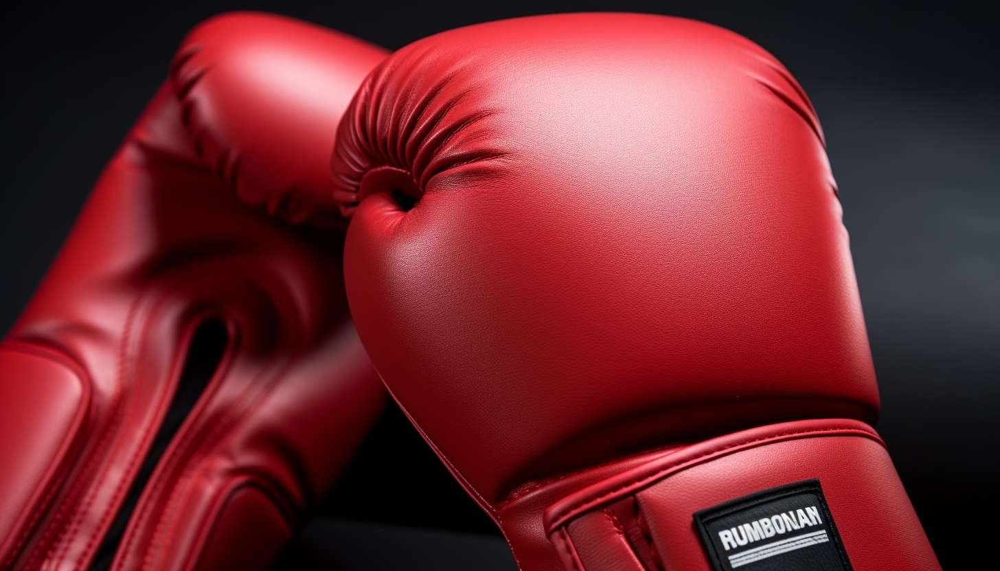
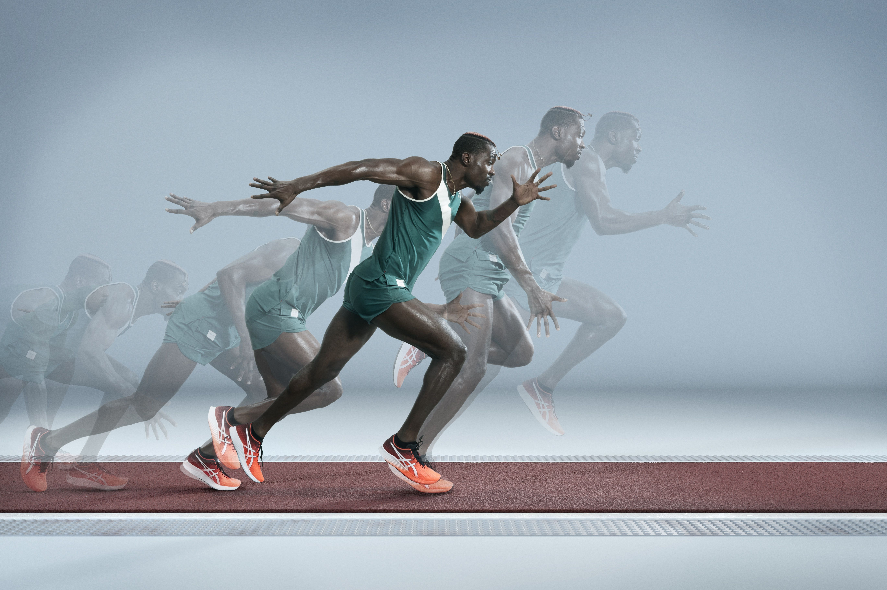

El arte del Striking en MMA
18 Septiembre, 2026
Dominar la distancia y la combinación de puños y patadas es clave para controlar el octágono y la defensa de derribo muy importante.
Leer masRincón MMA
Blog sobre artes marciales mixtas, combate y técnicas de striking.

Dominar la distancia y la combinación de puños y patadas es clave para controlar el octágono y la defensa de derribo muy importante.
Leer mas
El jab no solo puntúa sino que mide la distancia y frena los derribos del rival.
Leer más
La explosividad en combate se trabaja con intervalos intensos y calistenia de base.
Leer más